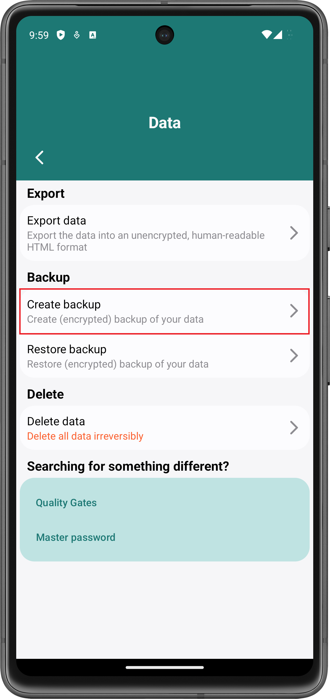
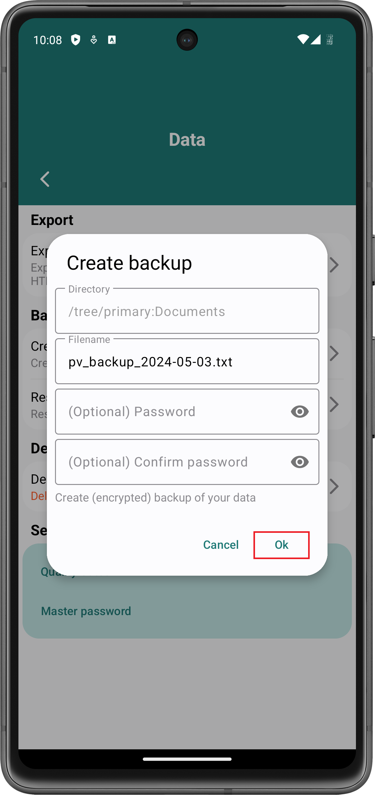
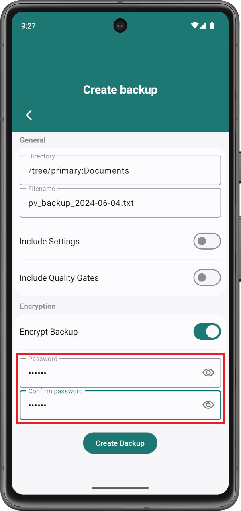
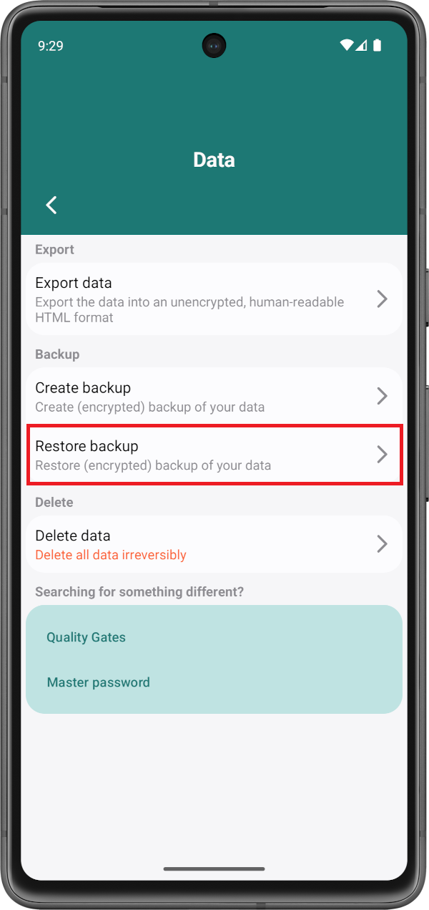
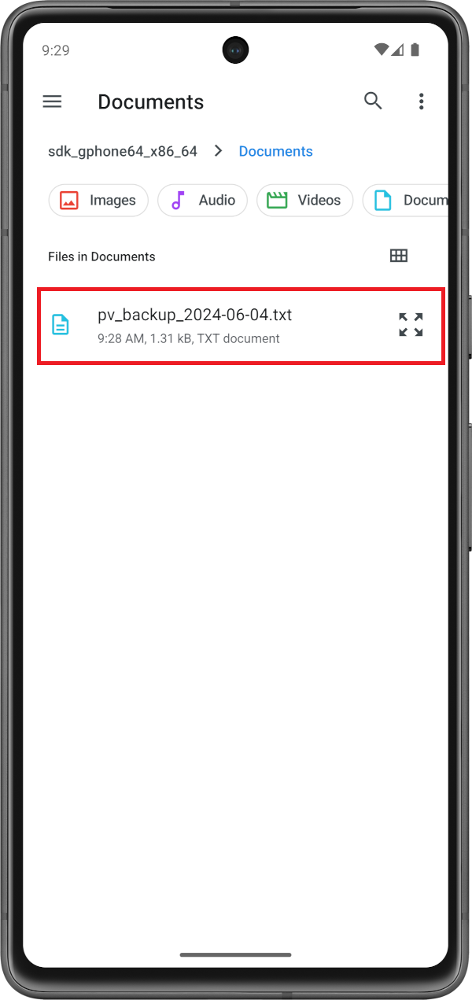

Create a backup to transfer data between devices or to save your data somewhere else in case you loose your device.
In order to create a backup, go to Settings > Data and click the Create backup-button:
Afterwards, the default file explorer of your Android device opens. Navigate to a directory in which you want to store your backup and click on the Use this folder-button. You may need to allow Password Vault to access files in the specified directory. In this case, click Allow:
Afterwards, a dialog opens. You may change the filename of the backup. Click Ok to save the backup.
In order to encrypt a backup, provide a password as follows:
The password is used to encrypt the backup. If you restore the backup, you will need to enter the password. Otherwise, the data cannot be decrypted.
In order to restore a backup, go to Settings > Data and click Restore backup:
Afterwards, the default file explorer of your Android device opens. Navigate to the directory in which the backup is located and click on the backup file:
The backup is then restored automatically.
If the backup is encrypted, a dialog opens in which you need to enter the password that was used when creating the backup. Enter the password and click Ok:

If the entered password is correct, the backup is restored.